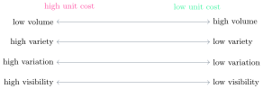

Definition
Operations management: managing the activities and processes through which an organization transforms inputs (resources) into outputs (goods and services), creating value for the customer — design, planning, control and improvement. Transformed resources: materials, information, customers; transforming resources: staff, plant and facilities. Three levels of analysis: supply network (flow between operations), operation (flow between processes), process (flow between resources). Operations and process management is the largest consulting area (31% of revenue of the 40 largest firms).
Products vs services: a continuum. Servitization: a manufacturer adds a growing service offer, moving from selling goods to selling product–service solutions. Tangible cues: physical elements that let customers judge an intangible service.
Model
The four Vs
| V | High end: high unit cost | Low end: low unit cost |
|---|---|---|
| Volume | (low volume) low repeatability, | (high volume) repeatable, |
| staff do many tasks, little | specialized, systematized, | |
| systematization | capital intensive | |
| Variety | (high) flexible, complex, matches | (low) well defined, routine, |
| specific needs | standardized | |
| Variation | (high) adjustable capacity, | (low) stable, predictable, |
| anticipates demand | high utilization | |
| Visibility | (high) low wait tolerance, judged | (low) time lag production–use, |
| on perception, customer skills | standardized, lower skills |
Low cost lives at: high volume, low variety, low variation, low visibility. Example: a craft bicycle workshop (low volume, high variety) vs a mass bicycle plant; in banking, the branch (high visibility) vs the back-office account centre (low visibility). Clarks shoes: own plants, dedicated and non-dedicated contractors, own and non-own sales network to absorb demand variation.
Managing variety efficiently
Ford Model T: "any colour so long as it is black". Today: mass customization — a standardized system allowing controlled variation (the customer sees freedom, the firm sees modules), via modularity, product configurators, 3D printing, assemble to order and postponement.
Performance objectives
| Objective | Process meaning |
|---|---|
| Quality | error-free, adequate resources |
| Speed | meet demand quickly |
| Dependability | reliable timing and volumes |
| Flexibility | resources with a range of capabilities |
| Cost | adequate capacity, no waste |
| Sustainability | energy, ecological footprint |
Micro-performance variables of a process: arrival rate, throughput rate, throughput time, number of units in process (WIP), utilization of resources; driven by variability of arrivals, configuration, capacity, variability of activities. Little's law links them: . Sandcone model: improvement builds cumulatively — quality first, then dependability, speed, flexibility, and finally cost rests on all of them.
Worked example
A help desk handles 20 tickets/hour with 60 tickets in the system on average: throughput time hours. To promise 1.5 hours, halve WIP or double the processing rate.
Pitfall
High variety is not bad: it is costly and must be priced or managed (modules). Visibility concerns the customer's exposure to the process, not marketing.
Recall
Draw the 4V table with cost implications; list six objectives; explain the sandcone; state Little's law.
Picture

All four Vs move unit cost in the same direction.